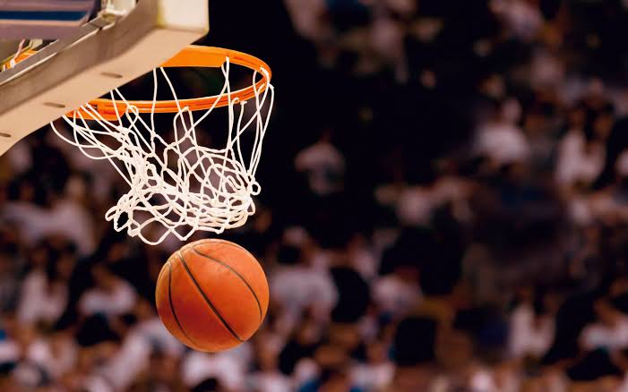
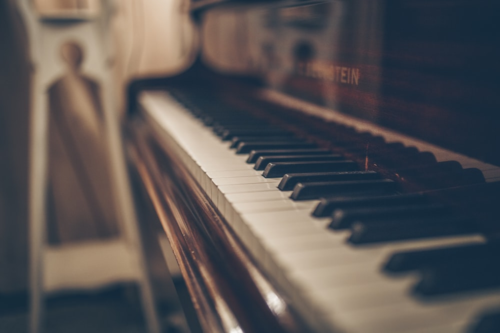

Elon Musk's Digital Portfolio
Extracurricular
Basketball
I have been playing basketball since I was G1 and joined the school's basketball team. I have been awarded with many award as I was a good basketball player. This is the extracurricular that I have been doing for the longest as I really liked playing basketball and also had to play sport to maintain good health.
Piano
Piano is another extracurricular that I have been playing for a long time. I played piano when I was at G3 and really loved it so I continued it for like an long time until now. I also went to many piano tests and was awarded many prizes. I also joined the school talent show many times to show everyone the sound of music.
Chemistry
This is on of the most recent Extracurricular activity that I was involved in. I started at G8 where I got intrested in chemicals I started to go and learn chemistry. I had joined the chemistry club and even attended the chemistry tournament and won the first place. I have got as much as 8 awards on winning the chemistry tournaments.